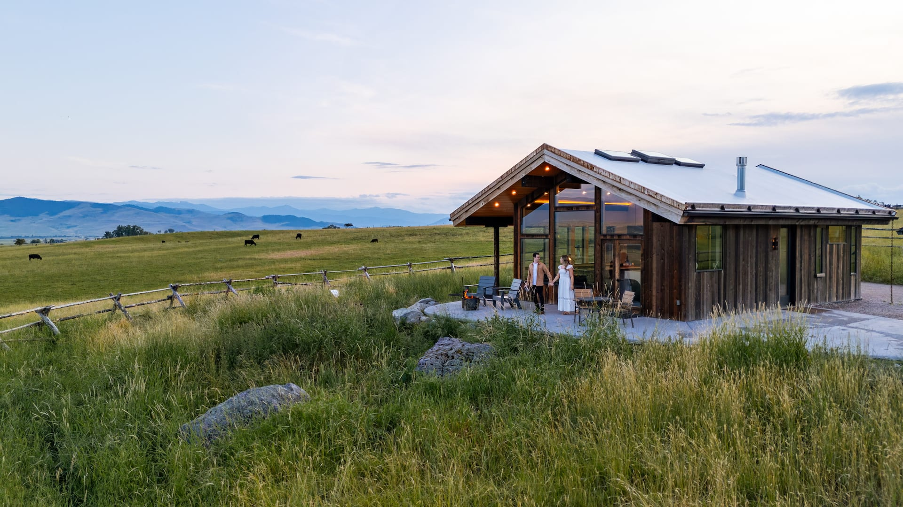
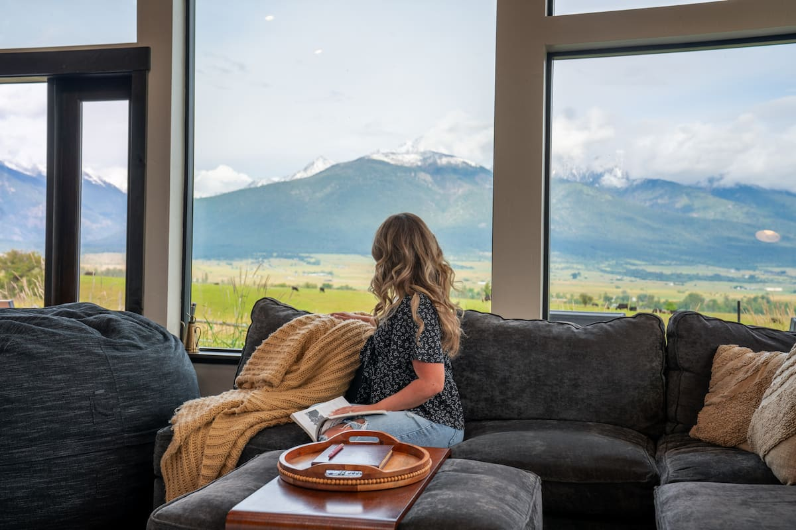

View photos2 guests
1 king bed
Finnish sauna
160 acres
The cabin
A window onto
the Mission Valley.
Watch the light move across the mountains from the sofa. Outside, cattle graze on the working farm, and the open fields are yours to explore on foot.
Back at the cabin, warm up in the private Finnish sauna, soak in the hot tub, or settle in beside the fire pit.

Stay details
Before you arrive
Where is the cabin?
The Highlander is on a working farm near Ronan in western Montana. Airbnb shares the exact location after booking.
What’s included in the stay?
You’ll have the entire one-bedroom cabin, with a king bed, one bathroom, a kitchen, Wi-Fi, a workspace and free parking. The sauna, hot tub and fire pit are private.
Can I bring a pet?
The host keeps the cabin pet-free to accommodate guests with allergies.
Reservations
Plan your stay
Choose your dates to see availability and pricing on Airbnb.